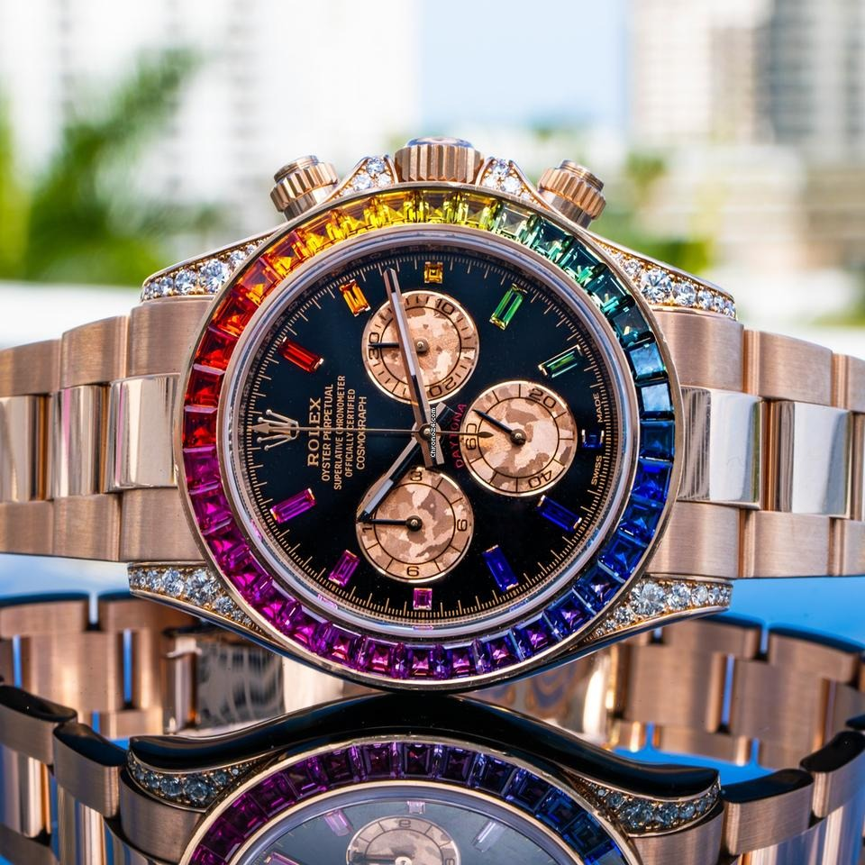
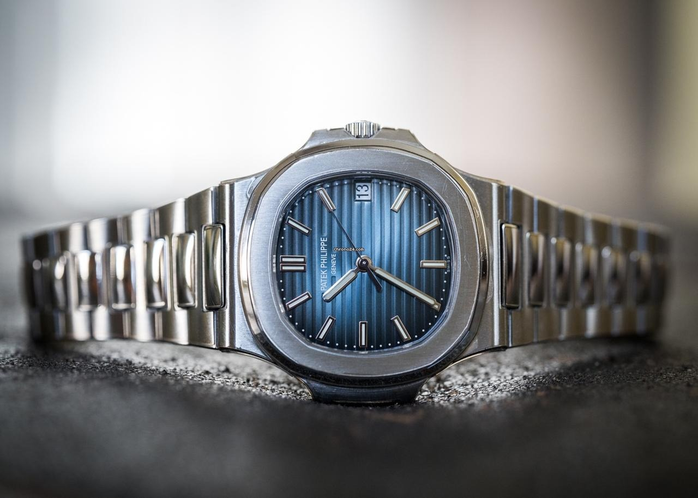
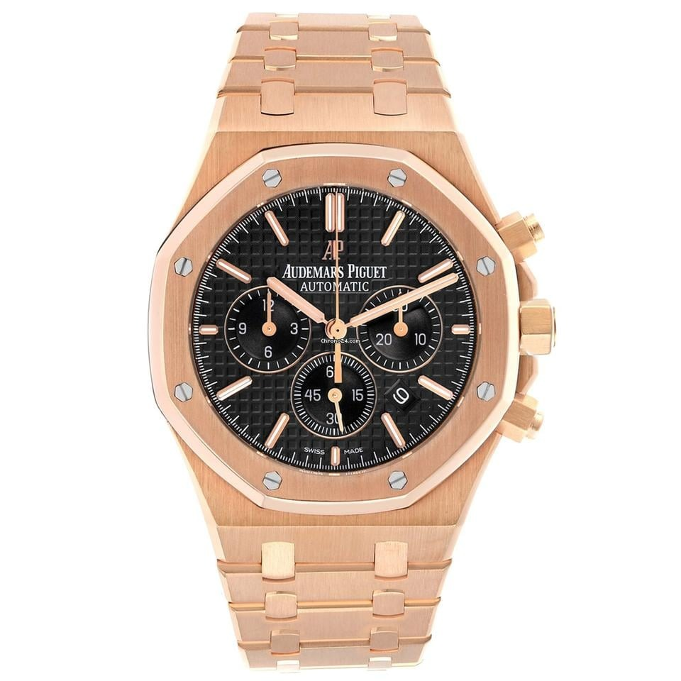
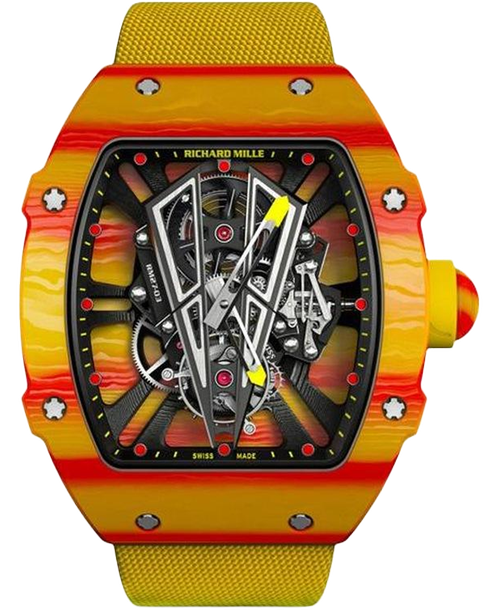
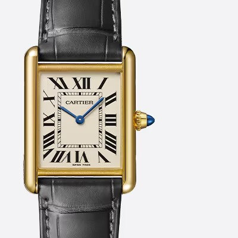

A legendary chronograph. An emblematic design. A reliable ally to start afresh.
Launched in 1963 and continually improved over the years, the Cosmograph Daytona has transcended its watch status to become a true icon.

With its iconic design, the Nautilus has epitomized the elegant sports watch since its launch in 1976.
Today, it boasts a splendid and incredibly rich collection of models, including a variety of complications such as perpetual calendar or flyback chronograph.
Crafted in steel, rose gold or white gold, these timepieces accompany the most active lifestyles with unparalleled class and sophistication.

Since its groundbreaking debut in 1972, the Royal Oak has
stood as a symbol of audacity and innovation in the world of
Haute Horlogerie, blending technological advances with
ancestral craftsmanship.

Since 2010, Richard Mille and Rafael Nadal have developed a range of remarkable
watches together as part of a collaboration that is unique in the history of watchmaking. The RM 27-03 is no exception. In terms of
shock-resistance, the tourbillon movement redefines the possibilities of technical performance. A milestone
in the history of watchmaking, it is capable of withstanding and resisting shocks of up
to 10,000 gs! It is a creation that is testimony to the power of the Spanish player’s game.

Designed by Louis Cartier in 1917, the Tank watch is an
icon of modern watchmaking. The sleek design of this
wristwatch, combining geometry with accurate
proportions, defines its bold identity. Immediately
recognizable and always in tune with the times, the Tank
has been reinterpreted for over a century in a host of
variations that remain faithful to the spirit of the original design